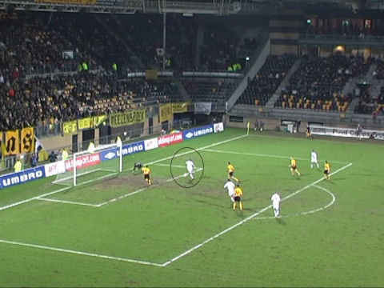

|
Roda JC - NEC (1-0) 10 februari 2007
|
Prins Carnaval en zijn adjudant tikken Babos eenvoudig uit. Het doelpunt wordt
afgekeurd door de waardeloze scheidsrechter Nijhuis.
Beerens, eerst in de neus gebeten door Samsoni (Vitesse) en nu alweer aan de
zorgen van het A-team overgeleverd.
Na ruim een halfuur ontbrandt deze saaie wedstrijd als Van Tornhout een goede
pass op Sibum geeft.
Van 25 meter afstand schiet Roda's nieuwste aanwinst wonderschoon in de
kruising.
1-0, (32'), Bas Sibum. Alaaaaaaf!
R-J-C......
In de tweede helft neemt NEC steeds meer het initiatief. Hier ontsnapt Roda.
Terwijl
Castro nog in de lucht hangt stuit de bal terug van de paal na een schot van
Barreto.

Jans, verprutst vervolgens knullig de superkans die uit de rebound voortkomt
door
zwak op de knuisten van Castro te schieten.
In de bange slotfase wordt NEC nog een paar maal gevaarlijk maar ook Roda krijgt
enkele aardige kansen uit de counter. Het slotsignaal van een zeer matige partij
voetbal wordt voornamelijk gevierd vanwege de drie heel belangrijke punten.
Plaatje van de nauwelijks 100 NEC-supporters.
Agustien die vandaag eindelijk een behoorlijke partij voetbalde ruikt hier onder
begeleiding
van
Kah aan de zoete geur van de overwinning.
De wave tussen de spelers en het publiek.
In de Kickoff wachten sommige dames ongedurig op de komst van de spelers.
Wie zou er jarig zijn?